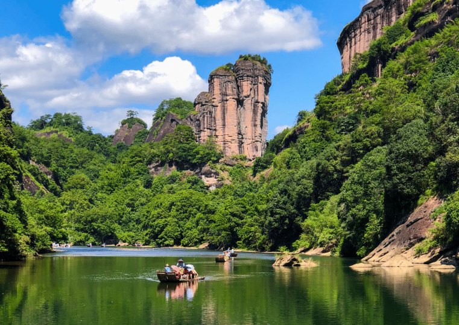

武夷山景区位于福建省北部，景区规划范围79平方公里(其中主景区64平方公里、度假区10.5平方公里、城村景区4.5平方公里)，划分为九曲溪、武夷宫、溪南、云窝--天游--桃源洞、山北五个景区，属典型的丹霞地貌，区内独特稀有的自然景观与底蕴深厚的人文景观相互溶合，是人类与自然环境和谐统一的代表，1982年被列为国家首批重点风景名胜区，1999年12月被联合国教科文组织列入世界文化与自然遗产地，1999年以来中央文明办、住建部、国家旅游局、授予的全国首批十大文明风景旅游区、国家首批5A级旅游景区、国家重点风景名胜区、全国文明风景名胜区，被世界旅游联合会授予“中国最佳绿色生态景区”、央视《魅力中国城》节目组委会评为 “年度魅力生态景区”，成为福建省对外展示的重要窗口。2021年9月30日，国务院批复同意设立武夷山国家公园；同年10月12日，习近平总书记宣布，中国正式设立武夷山等第一批国家公园。国家公园体制作为国家战略，景区内的文化遗产、人文要素受统筹保护与传承，景区上下牢记习总书记的嘱托，传达生态保护观念，讲好武夷故事，向广大游客展示生态文明建设成果，让武夷山景区成为向世界展示美丽中国的重要窗口。2021年3月22日，习总书记调研考察武夷山，他走访了武夷山国家公园智慧管理中心、朱熹园、天游、九曲溪、燕子窠等处，对生态文明建设、智慧景区建设、传统文化传承、人文精神体现等工作给予高度评价。
